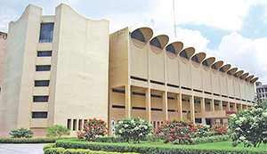
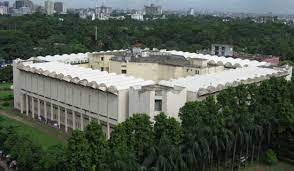

The Bangladesh National Museum (Bengali: বাংলাদেশ জাতীয় জাদুঘর), is the national museum of Bangladesh.[2] The museum is well organized and displays have been housed chronologically in several departments like department of ethnography and decorative art, department of history and classical art, department of natural history, and department of contemporary and world civilization. The museum also has a rich conservation laboratory. Nalini Kanta Bhattasali served as the first curator of the museum during 1914–1947.[3]
 Bangladesh National Museum was originally established on 20 March 1913, albeit under another name (Dacca Museum), and formally inaugurated on 7 August 1913 by The Lord Carmichael, the governor of Bengal. In July 1915 it was handed over to the Naib Nazim of Dhaka.[4] Bangladesh National Museum was formed through the incorporation of Dhaka museum and it was made the national museum of Bangladesh on 17 November 1983. It is located at Shahbag, Dhaka.